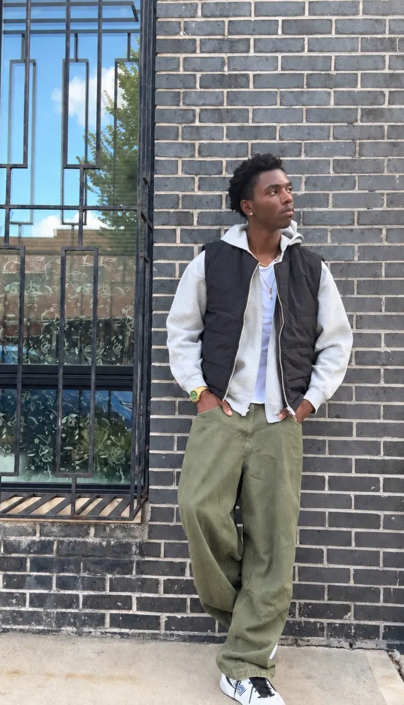
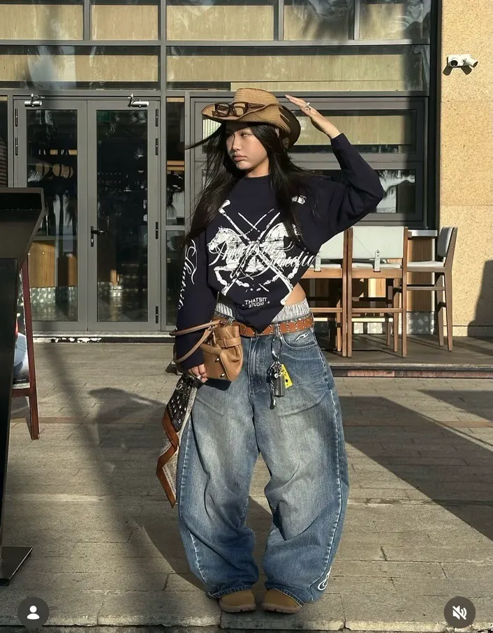
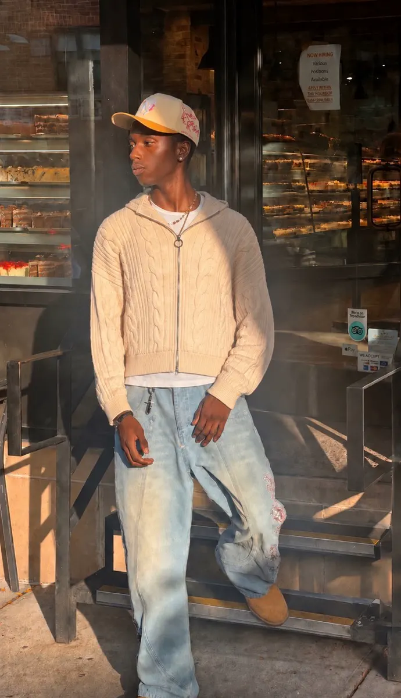
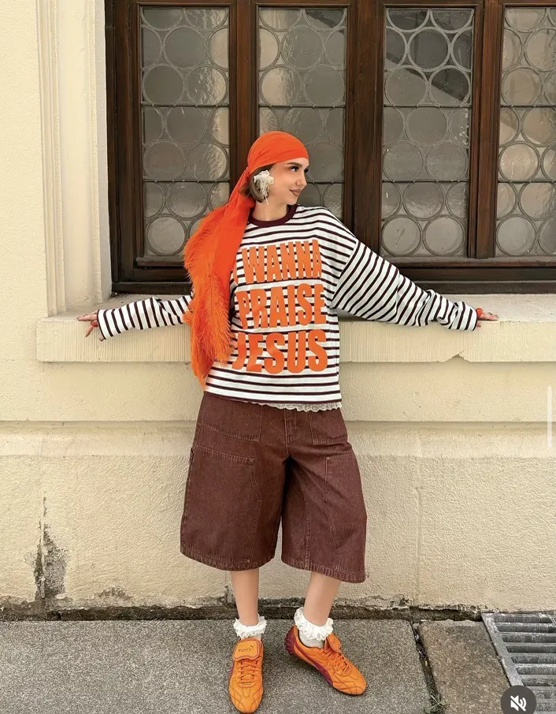
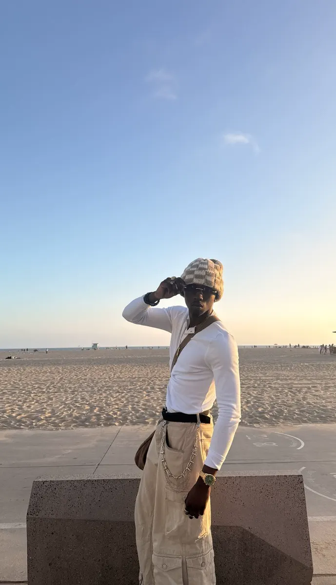
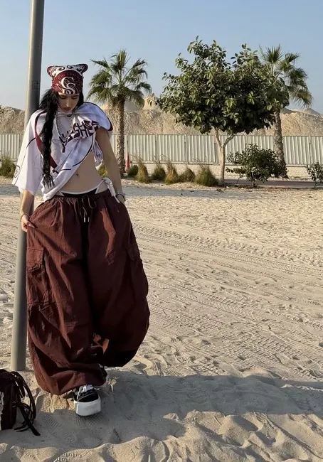
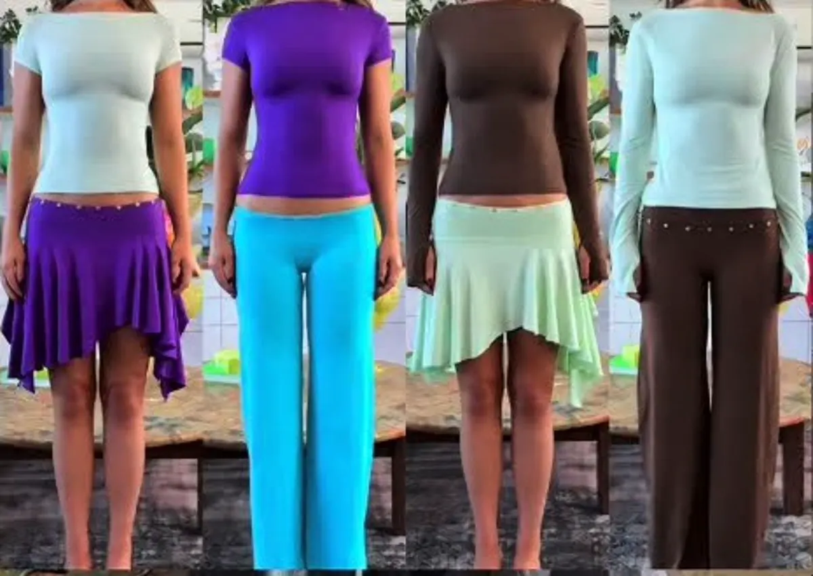
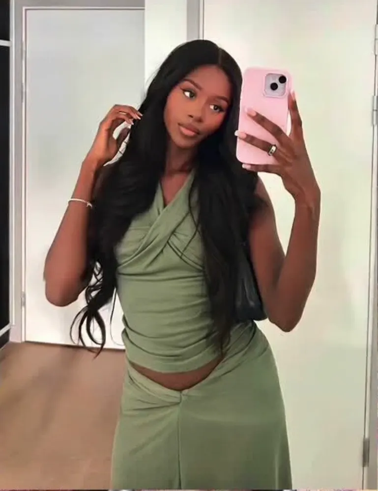
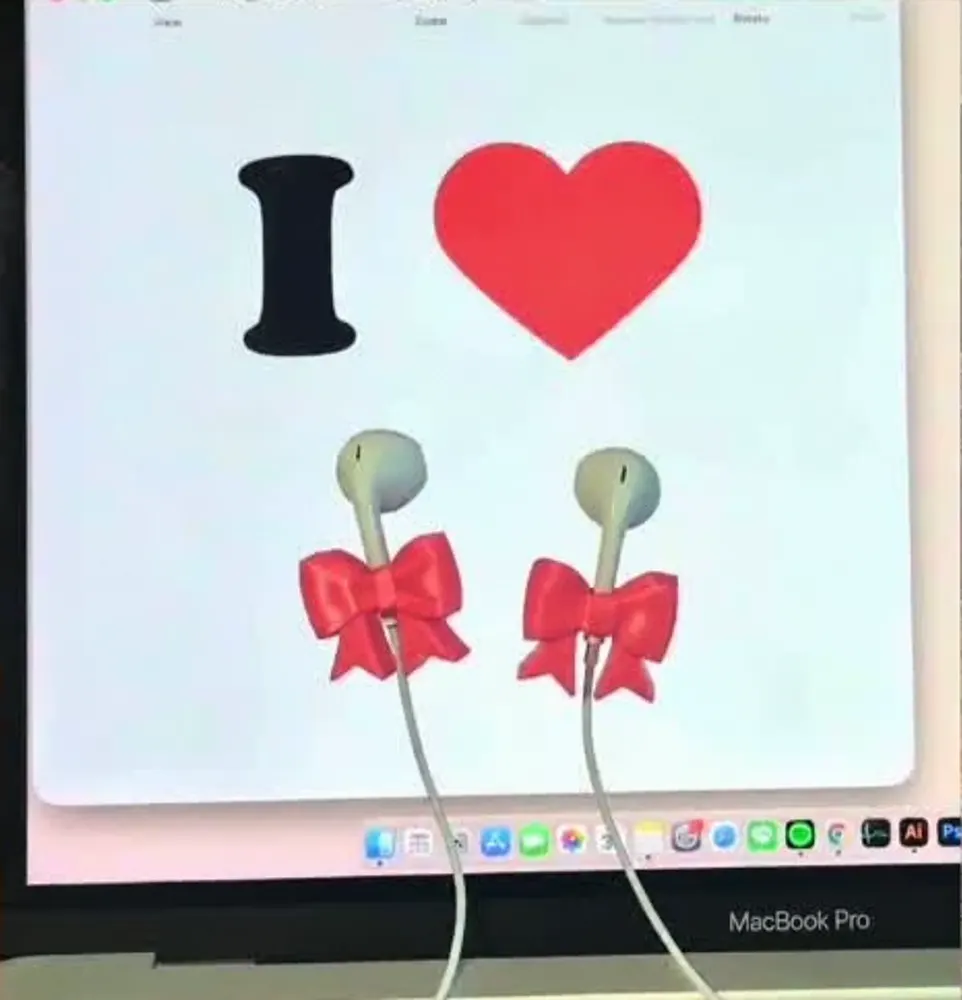
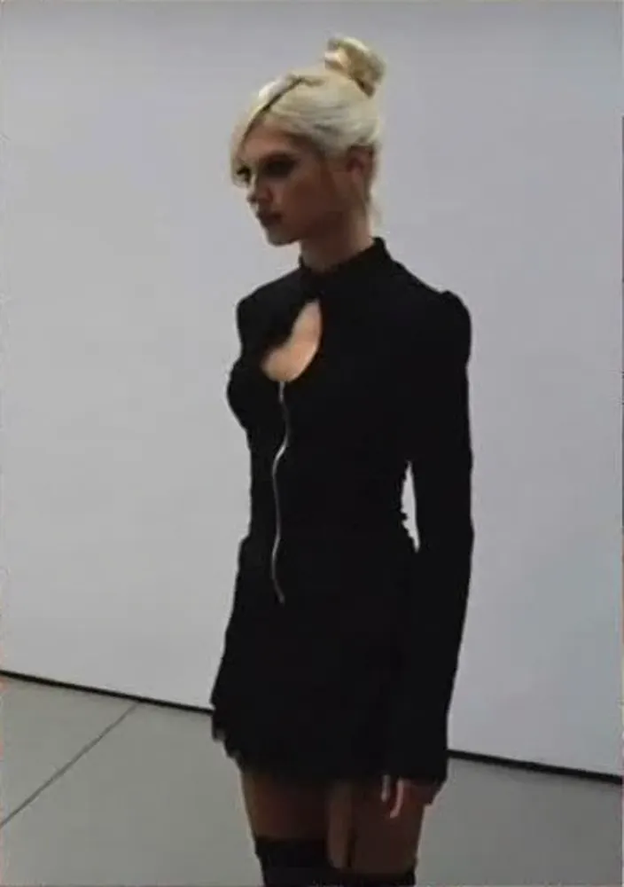

Beyond the Basics · The Eighteen Edition
Sanai's 7-day mix-and-match playbook
Four discoveries. A colour playbook. A starting point for making it your own.
Beyond the Basics · The Eighteen Edition
Sanai's 7-day mix-and-match playbook
Four discoveries. A colour playbook. A starting point for making it your own.
No other copy exists.
If a pairing the Map calls familiar looks wrong on you, send Earon the photo. You fix it together the same day.
Pay attention to what you keep choosing. Repetition is evidence of your taste beginning to take shape.
Answer both.
Tap a colour for the bottoms, the top, a layer and the shoes. The Map says which pairs are familiar.
Understand your decisions well enough to change them on purpose. Tap a cell as you go.
If you can explain the difference between two versions, your eye is becoming more deliberate.
An outfit can be working before it feels finished. Give yourself room to diagnose it.
The goal is not a perfect formula. It is learning to notice, adjust and make stronger choices on your own.
My starting point is the bottoms. Use the process as a framework and keep what works for you.
A foundation gives you direction. It does not decide the whole outfit for you.
Compare how each look builds depth, controls volume and uses finishing details.


Layering + balanceA fitted black vest contains the grey hoodie while wide olive trousers restore volume below. Each edge stays visible, so the layers stay readable.
Volume + accessoriesA fitted graphic top meets rounded denim volume. Hat, belt, bag and hanging details extend the idea without repeating the same object.
Take it forward. Choose one relationship you noticed: proportion, repetition, layering or a finishing detail. Use it on the next page, building from the bottoms up.
Repetition can be quiet or obvious. Texture changes how the colour is experienced.


Texture + light tonesCable knit gives the cream layer depth. Pale blue denim keeps the palette light while adding colour and surface variation.
Colour repetition + proportionOrange returns at the head, graphic and shoes. Wide shorts and an oversized striped top make the repetition feel playful rather than polished.
Look beyond matching. Ask where a colour appears, how often it returns, and whether texture makes the pairing softer or louder.
Carry the same observation from colour into shape. How does each outfit control volume?


The fitted white top sharpens relaxed cargo volume. In the second look, burgundy repetition keeps exaggerated trousers, asymmetric layers and accessories connected.
Choose one colour you already own. Build three relationships around it.
Stay within lighter and darker versions of one colour. Let texture do some work.
Add a colour that creates separation. Adjust the amount until it feels intentional.
Keep the base calm. Add one small colour moment.
Tap a colour. These pairings are starting points.
Opposites on the colour wheel are complements. Even a small amount can feel vivid.
Colour that is built to move together.

Designed in Western Australia in small batches. Structured yet soft, bold yet wearable. Tops, bottoms, dresses, sets and bags connect through recurring shapes and colour stories.
How to explore it. Use the Look Library and World of Colour to notice unfamiliar combinations. Then judge every separate on its own: can it enter more than one colour story?
Shop BLANCH, official store→Wearability with a point of view.

Based in Los Angeles. Everyday separates next to expressive dresses and occasion pieces. Watch the drape, ruching, fitted lines and asymmetric details. A wearable piece can still create interest through how it follows the body.
How to explore it. Decide the role a piece would play: foundation, focal point or flexible layer. Versatility comes from how many ideas a piece opens, not from choosing a neutral.
Shop NIA, official store→Personality in the smallest details.

An independent accessories label with a playful, object-led point of view: headphone charms, miniature flip-flop charms, everyday objects turned into style details. The appeal is scale, humour and placement.
How to explore it. Start with the feeling you want an accessory to add. Look for a link through colour, shape, motif or material. It can support the outfit or interrupt it on purpose.
View Carbohydrate, official Instagram→Shape with a rebellious edge.

A Seoul label shaped by punk energy and bold femininity. Look at the construction: ruching, keyholes, one-shoulder lines, fold-over waists, controlled volume. These change the outline before colour comes in.
How to explore it. Browse by silhouette first. Save the shapes that feel new. Compare them with the bottoms and layers you already own.
Shop HILLDA, official store→From a few pieces you own. Change the numbers and watch the total move. The Map on page 10 says which pairs are familiar.
3 × 6 × 3 × 2 = 108
Four labels to explore. One colour map. A way to build any outfit from the bottoms up. A week of small tasks.
I went looking beyond the brands I normally shop. New places to explore. Ideas to test. A clearer way to think about style.
The point is not to copy my wardrobe. Notice what catches your eye. Learn why it works for you. Then build a style that feels like yours.
"In order to be irreplaceable one must always be different."
Coco Chanel
Made for you. Turn the page.
from Earon
let me put you on.
for Sanai
Earon · Vol. 01